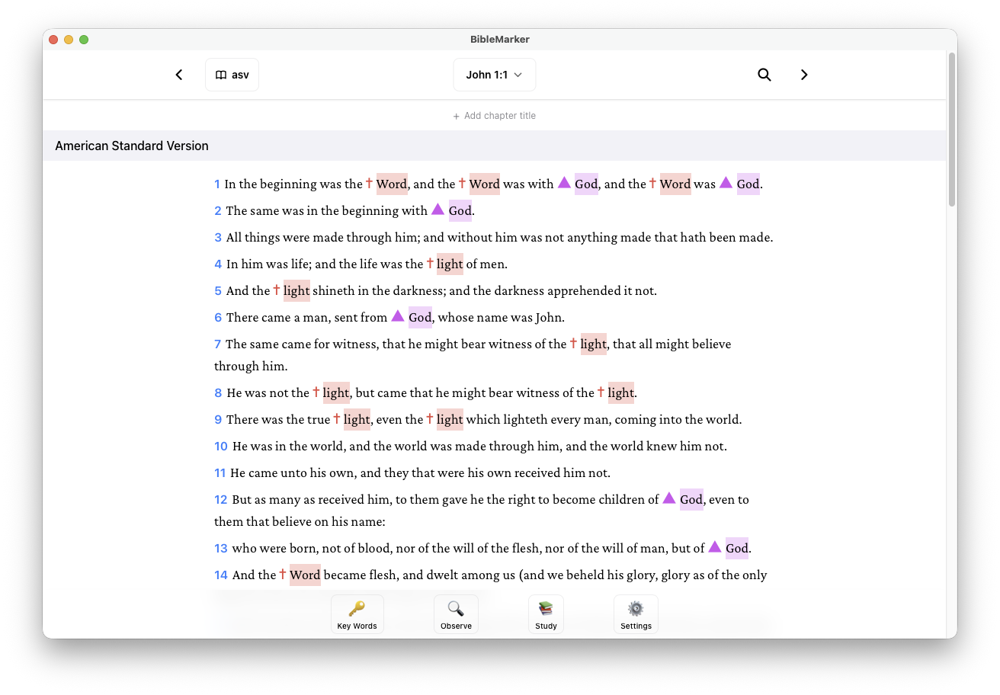

BibleMarker
Deep, meaningful Bible study with powerful annotation tools, keyword tracking, and multi-translation support
Available on macOS, Windows, and Linux • iOS available now

Built for Inductive Bible Study
BibleMarker follows the same precepts as classic inductive study: observation (what does the text say?), interpretation (what does it mean?), and application (how do I live it?). Mark key words, make lists, note contrasts and time expressions, and identify themes—all in one place.
Mark Key Words & Phrases
Key words are essential to the text; authors repeat them to convey their point. Define keywords once and BibleMarker tracks every occurrence across your study so you can observe patterns and structure.
Lists & Structure
Making lists reveals truths and highlights important concepts. Number items in the text, list what you learn about each key word or person, and add your own chapter titles and section headings.
Contrasts, Time & Geography
Note contrasts and comparisons, expressions of time, and geographic locations. The text’s own structure—who, what, when, where, why, how—guides accurate interpretation.
Multi-Translation View
Compare up to 3 Bible translations side-by-side with synchronized scrolling. Use multiple versions to observe the text more precisely and interpret with care.
Annotations & Notes
Highlight, underline, and mark verses with custom colors and symbols. Add notes with Markdown support to capture interpretation and application as you study.
Offline & Private
Chapters cache locally for offline reading. All your markings and notes stay on your device—no account required, no data sent to our servers.
BibleMarker is built around the inductive Bible study approach—observation, interpretation, application. BibleMarker is independent software and is not affiliated with or endorsed by Precept Ministries International or any other organization.
Bible Translations
NASB 2020 is bundled with the app and works offline with no setup. Additional translations are available as downloadable SWORD modules or via an optional ESV API key.
ESV: Requires a free API key from Crossway's ESV API, subject to noncommercial use terms. Configure it in Settings → Bible.
Ready for Deeper Bible Study?
Free to download and use. NASB 2020 is bundled — no account or API key required to get started.
For questions or inquiries, please see our Support page or visit Spears Software.